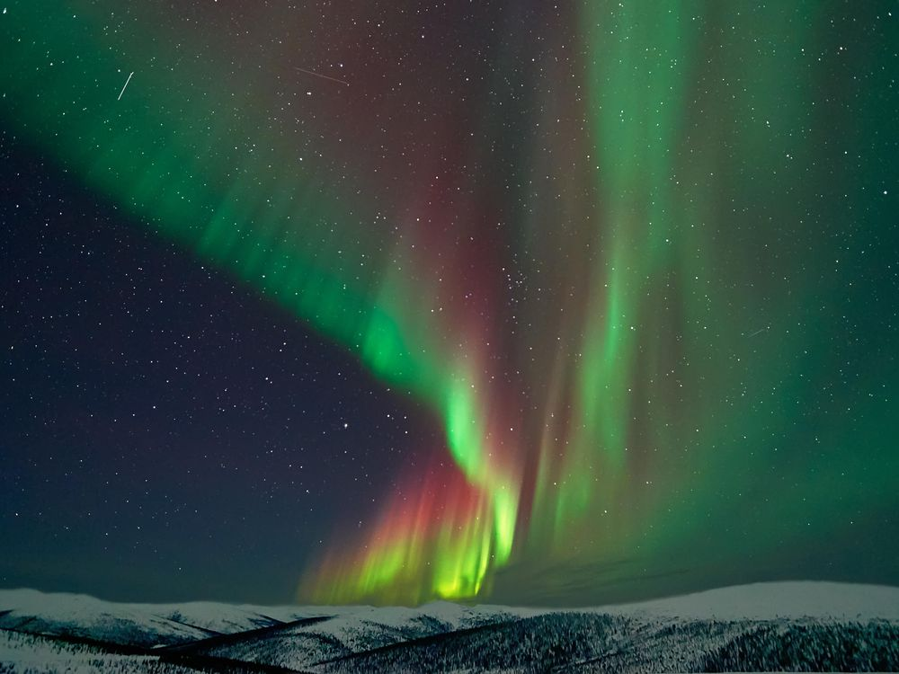
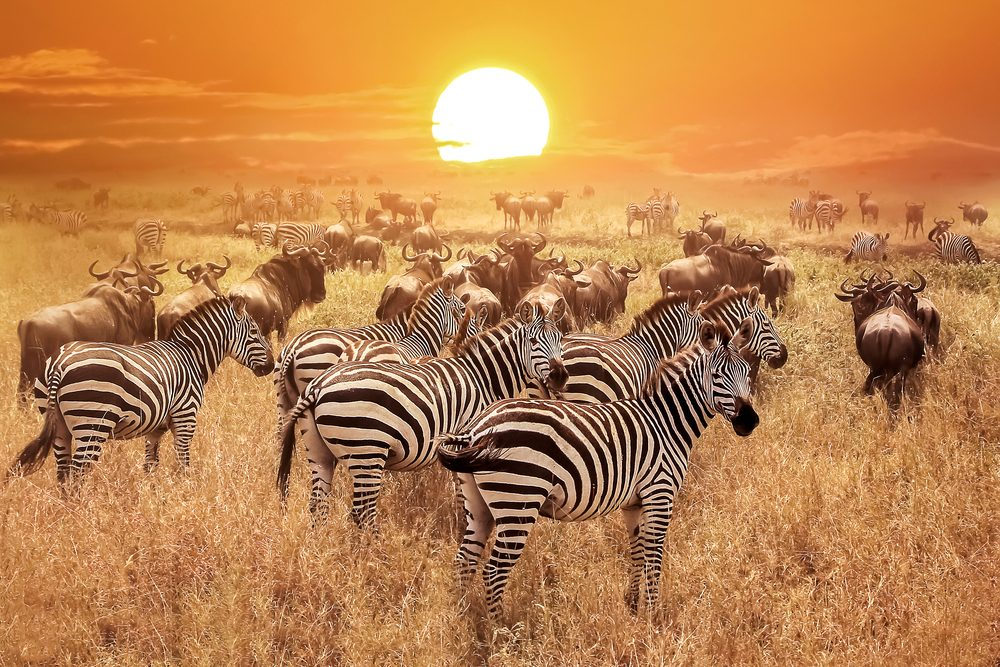

MY BUCKET LIST
Witness the Northern Lights in Norway or Iceland:
Seeing the Northern Lights, also known as the Aurora Borealis, is a mesmerizing natural phenomenon. Norway and Iceland are renowned for their clear skies and stunning landscapes, making them ideal locations to experience this breathtaking light display.
 Explore the ancient ruins of Machu Picchu, Peru:
Explore the ancient ruins of Machu Picchu, Peru:
Machu Picchu is a UNESCO World Heritage Site and one of the most iconic archaeological sites in the world. The ancient Incan citadel is nestled high in the Andes mountains, offering a glimpse into the fascinating history and ingenuity of the Inca civilization.
Take a wildlife safari in the Serengeti, Tanzania:
The Serengeti National Park is famous for its diverse wildlife and the annual wildebeest migration. Going on a safari here allows you to witness majestic animals like lions, elephants, zebras, and giraffes in their natural habitat.
 Trek to the base camp of Mount Everest, Nepal:
Trek to the base camp of Mount Everest, Nepal:
For adventurous souls, trekking to Everest Base Camp is a dream come true. The journey takes you through picturesque landscapes, traditional Sherpa villages, and offers stunning views of the world's highest peak.
 Dive the Great Barrier Reef in Australia:
Dive the Great Barrier Reef in Australia:
The Great Barrier Reef is the world's largest coral reef system, teeming with vibrant marine life. Diving or snorkeling here provides a chance to encounter colorful corals, tropical fish, and other fascinating sea creatures.